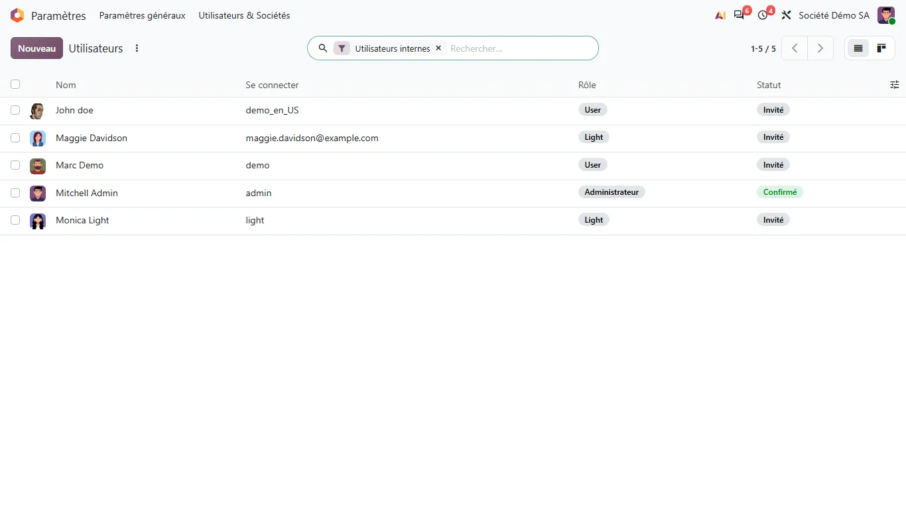
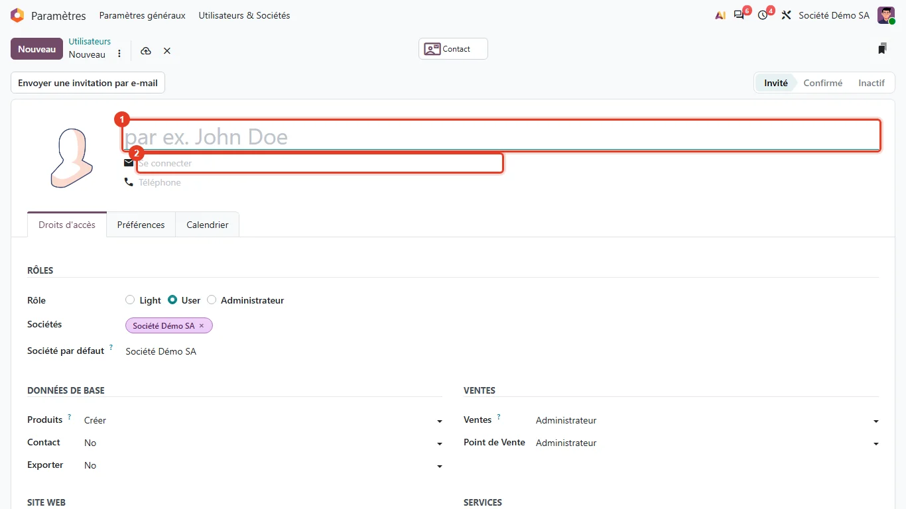
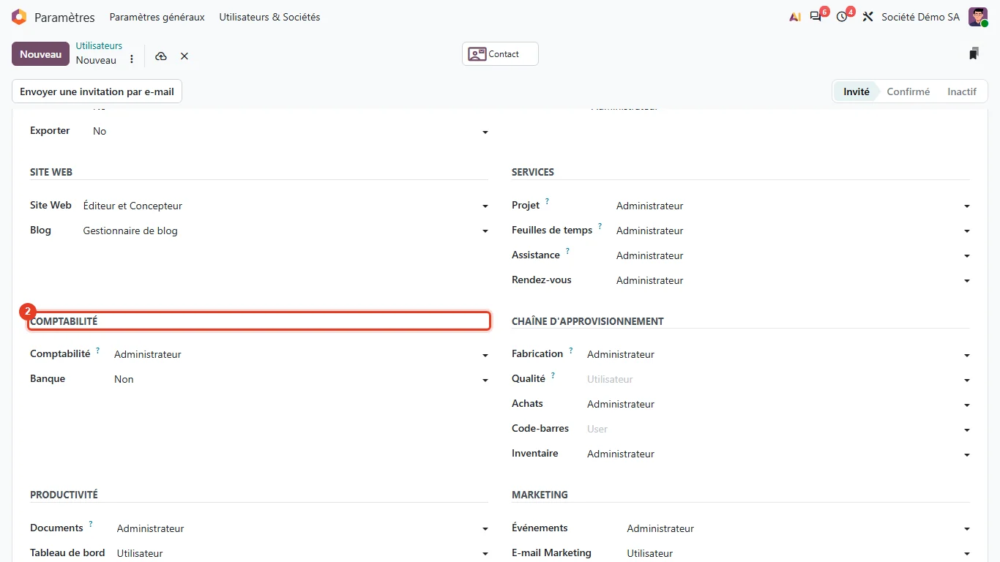

Créer un utilisateur et lui donner ses droits
Objectif. Donner à chacun l'accès strictement nécessaire à son poste.
Menu Odoo 15Paramètres > Utilisateurs et sociétés > Utilisateurs
Étapes
- Cliquez sur Nouveau : nom (1) et adresse e-mail de connexion (2).
- Dans Droits d'accès, choisissez le niveau pour Comptabilité (2) : Facturation (saisie), Comptable, ou Conseiller (validation).
- Donnez les autres applications seulement si le poste l'exige.
- Enregistrez : l'utilisateur reçoit une invitation par e-mail.



À vérifier
- La personne qui saisit n'a pas les droits de validation.
- La liste des utilisateurs et de leurs droits est validée par la Direction.
À éviter
- Ne partagez jamais un compte utilisateur entre plusieurs personnes.
Exercice
Créez un utilisateur « caissier » avec les droits de facturation seulement.